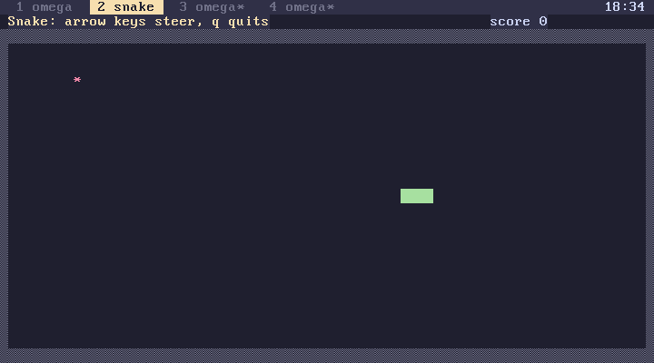
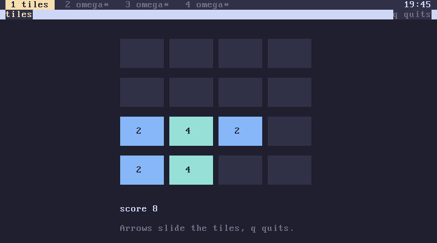
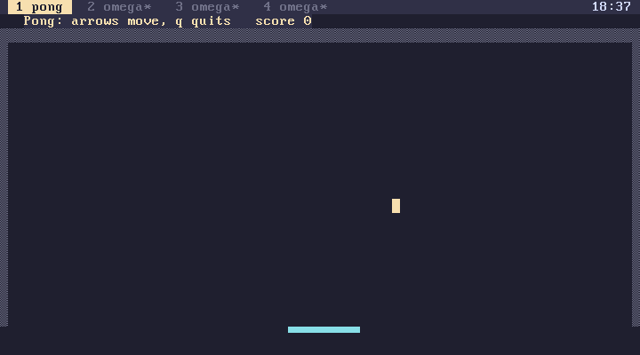
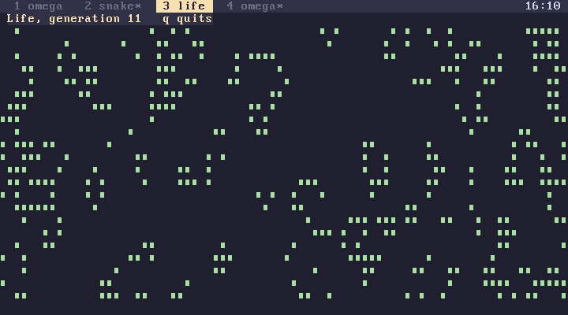
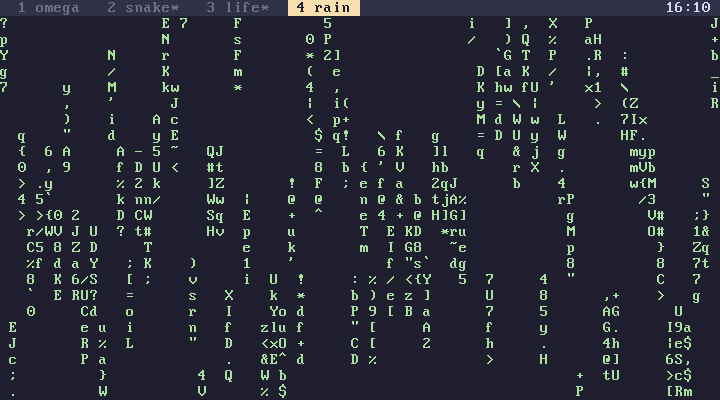
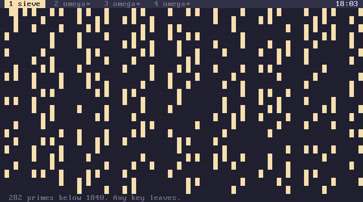
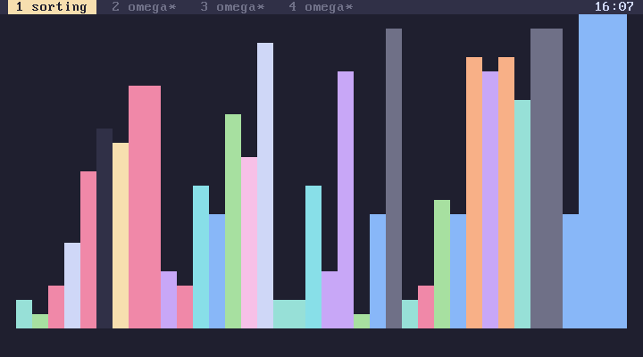

subverge
subvergeGames
The games and animations draw directly on the text screen. All of them are a page or two of omega in root, and 'name open shows how each one works.
snake
snake
The arrow keys steer, and the snake can't reverse into itself. Each piece of food adds three segments and a point. Running into the wall or into yourself ends the game. The snake moves every 8 ticks, about twelve steps a second.

tiles
tiles
tiles is a sliding tile game on a 4 by 4 board. The arrow keys slide every tile as far as it goes, and two equal tiles that meet merge into their sum. Each slide that moves anything adds a new 2 or, one time in ten, a 4. Merges add their value to the score. The game ends when no slide changes the board. Tile colours follow the theme.

The board is a list of 16 numbers, and each slide is computed by reading the board along one of four sets of index lines, sliding each line left with slide-row, and writing it back with set-at. The same code handles all four directions:
[ 2 2 4 0 ] slide-row . . 4, then [ 4 4 0 0 ]
[ 2 2 2 2 ] slide-row . . 8, then [ 4 4 0 0 ]
pong
pong
Left and right move the paddle along the bottom. Each return scores a point, and a miss ends the game.

life
life
Conway's Game of Life on an 80 by 22 board that wraps at the edges, seeded at random with about one cell in four alive. It keeps two boards in raw memory from alloc and swaps them each generation, and frees both when you quit, so it is also a working example of the memory words.

Animations
These run until a key is pressed.
| Word | What it draws |
|---|---|
rain |
falling green characters |
stars |
a starfield flying towards you |
bounce |
balls bouncing off the edges |
sieve |
the sieve of Eratosthenes, crossing out multiples up to 1840 |
sorting |
bubble sort on random bars, swap by swap |
fortune |
one short fact, printed and done |



Running a few of them in different tabs and then top shows the scheduler sharing the CPU between them.
Writing your own
The bundled games share a shape:
[ "name" title wipe nocursor
... set up locals ...
[ going ] [
... draw with put and text ...
key? quit-key? [ 0 ->going ] when
5 sleep
] while
wipe "omega" title
] :name
title names the tab, wipe and nocursor clear the screen and hide the cursor, and the loop draws a frame, reads at most one key without waiting and sleeps a few ticks. quit-key? is true for q, Escape and Ctrl-C. Games that only change on a key press, such as tiles, use key instead of key? and skip the sleep.
Drawing only what changed is much faster than redrawing the whole screen: snake draws the new head and erases the old tail, and never touches the rest. Use the colour numbers rather than fixed colours so the game follows the theme.